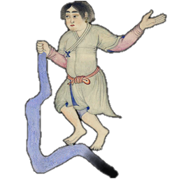

صور الكوكبات السماوية
"صور الكوكبات الشمالية"
الدب الأصغر

الدب الأكبر

التنين

الملتهب

العوّاء

الإكليل الشمالي

الجاثي

السلحفاة

الدجاجة

ذات الكرسي

حامل رأس الغول

ممسك الأعنة

الحوّاء و الحيّة

السهم

العقاب

الدلفين

قطعة الفرس

الفرس الأعظم

المرأة المسلسلة

المثلث

"صور الكوكبات الجنوبية"
قيطس

الجبار

النهر

الأرنب

الكلب الأكبر

الكلب الأصغر

السفينة

الشجاع

الباطية

الغراب

قنطورس و السبع

المجمرة

الإكليل الجنوبي

الحوت الجنوبي

"صور الأبراج الإثني عشر"
الحمل

الثور

التوأمان

السرطان

الأسد

العذراء

الميزان

العقرب

الرامي وهو القوس

الجدي

الدلو و هو ساكب الماء
الحوت


ذِكْر الفرس
قال ناظم الأرجوزة أبو علي الحسين بن عبدالرحمن الرازي، ابن الفلكي الشهير عبدالرحمن بن عمر الرازي المشهور بالصوفي:
-
يتبعهن صورة تدعى الفرسكواكبٌ أكثرهن كالقبس
-
قد شبهتها حكماء الرومبفرس ذي منظر عظيم
-
له جناحٌ وله يدانينقص عن خلقته الرجلان
-
مع العسيب والقطاة والكفليربو من الليث إذا الليث استقل
-
ترى على الهامة منها نجمينبينهما في البعد قيد شبرين
-
يدعوهما سعد البهام العربُيتلوهما إذا استنارا كوكبُ
-
وقد يسمّى عندهم بالجحفلةيشرق في الجو لمن تأمّله
-
وبعده نجمان مظلمانهما من السعد على تداني
-
هما من الطِرف على مَعْرَفتهخبر من لاشك في معرفته
-
أنهما عند أعاريب اليمنقد لقبا سعد الهمام فاعلمن
-
يطلع من بعدهما نجمانعلى لبان الطرف مظلمان
-
بالقرب من نجم منير لامعسمتهما العرب بسعد بارع
-
يطلع من بعدهما سعد مطرنجمٌ يفوت صغراً حسّ البصر
-
وكوكب بالقرب منه كالقبسهما على الركبة من هذا الفرس
-
في صورة الطرف نجومٌ أربعةتبصرها مربعاً فيه سعة
-
يعرفن بالفرغين مابين العربوناهز الدلو لها أيضاً لقب
-
في وسط الفرغين كوكبانكلاهما في مَركَلِ الحصان
-
خبّر بعضُ من روى من العربأنهما يسميان بالكرب
صورة كوكبة الفرس
ويتبع ماسبق كواكبٌ تسمى الفرس منها كواكب كثيرة لامعة كالقبس.

وشبهت الروم هذه النجوم بصورة فرس عظيم. لهذا الفرس جناح ويدان ولكن ينقص من الصورة الرجلان، وينقص منها أيضاً العسيب والقطاة والكفل، والعسيب هو منبت شعر الذيل والقطاة هي المكان من ظهر الفرس الذي يكون عليه الرديف خلف الصهوة والكفل هو مؤخرة بدن الفرس. والمقصود أن صورة الفرس هي صورة لنصف جسم الفرس الأمامي وليس فيها النصف الخلفي الذي يحوي القطاة والكفل والذيل.

وهذا الفرس يربو من الليث إذا استقل، يعني أن الفرس يشتد النَفَس عنده من العدو فزعاً من الليث، إذا الليث ارتفع في السماء، وهو يقصد أنه إذا ارتفعت كوكبة الأسد شرقاً، غابت وهربت منها كوكبة الفرس غرباً، والربو هو اشتداد النفس عند الفرس من العدو والفزع.


سعد البهام
وترى على رأس الفرس نجمين بينهما من البعد شبرين، والشبر بمقياس الصوفي هو 47 دقيقة قوسية، يعني بمقياسنا الحديث 94 دقيقة، ولقد وجدت القياس بين هذين النجمين يساوي درجة و34 دقيقة، ويساوي ذلك 60 + 34 = 94 دقيقة، فانظر مدى دقة الصوفي في القياس قبل ألف سنة. هذان النجمان يسميهما العرب سعد البهام. وذكر الصوفي الأب أنهما يسميان أيضاً سعد البهائم وسعد النهى. ويطلع بعد طلوعهما ووضوح نورهما كوكب.

الجحفلة
سعد الهمام
وبعد طلوع هذا النجم يطلع نجمان خفيان قريبان من سعد البهام، وهما في الصورة على مَعْرَفَة الطِرْف، والمَعْرَفَة هي منبت شعر الفرس من العنق، والطِرف هو الكريم من الخيل، والمعنى أن هذين النجمين في الصورة على عنق الفرس. وهذا هو قول من لا نشك في علمه. واسم هذين النجمين عند العرب سعد الهمام.
سعد البارع
ويطلع من بعدهما نجمان خفيان يقعان من الفرس على لَبَانه، أي على وسط صدره ويسميهما العرب سعد البارع وهما قريبان من نجم لامع هو أحد نجمي الفرغ المقدم.
سعد مطر
ويطلع بعد هذين النجمين سعد مطر وهو نجمان أيضاً، أحدهما خافت لايكاد يُرى والآخر مضيء كالقبس وهما من صورة الفرس على ركبته.
الفرغان
وفي صورة هذا الطِرف أربع نجوم مضيئة على شكل مربع واسع، يسمي العرب الأولين منهما الفرغ المقدم أو الفرغ الأول أو ناهزي الدلو المقدمين ويسميان أيضاً العَرقوة العليا، ويسمى التاليين الفرغ المؤخر أو الفرغ الثاني أوناهزي الدلو المؤخرين ويسميان أيضاً العَرقوة السفلى. والأربعة معاً تسمّى الدلو.
الكرب
وفي وسط هذه النجوم الأربعة نجمان هما من الصورة في مكان مَرْكَل الحصان أي مكان مايركل الراكب برجله على بدن الحصان، وهذان النجمان تسميهما العرب الكَرَب، والكرب هو الحبل الذي يلف على العرقوتين ويتصل بالرشاء. ولهذين النجمين اسم آخر هو النعام.

بلدة الثعلب
البقعة بين الفرغ المؤخر والسمكة وساكب الماء تسمى بلدة الثعلب.

- قطعة الفرس
إعداد قتيبة أقرع
- المرأة المسلسلة